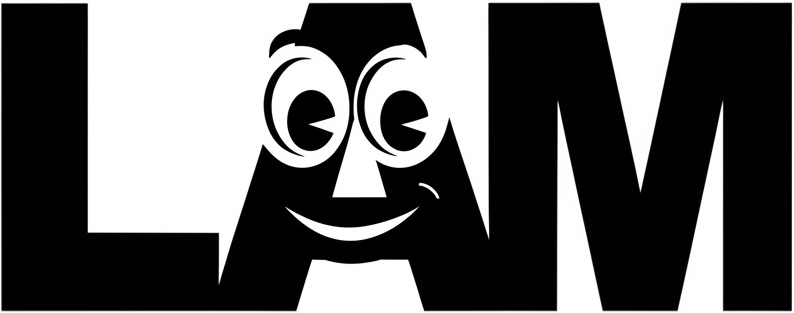

We present LAM, an innovative Large Avatar Model for animatable Gaussian head reconstruction from a single image. Unlike previous methods that require extensive training on captured video sequences or rely on auxiliary neural networks for animation and rendering during inference, our approach generates Gaussian heads that are immediately animatable and renderable. Specifically, LAM creates an animatable Gaussian head in a single forward pass, enabling reenactment and rendering without additional networks or post-processing steps. This capability allows for seamless integration into existing rendering pipelines, ensuring real-time animation and rendering across a wide range of platforms, including mobile phones. The centerpiece of our framework is the canonical Gaussian attributes generator, which utilizes FLAME canonical points as queries. These points interact with multi-scale image features through a Transformer to accurately predict Gaussian attributes in the canonical space. The reconstructed canonical Gaussian avatar can then be animated utilizing standard linear blend skinning (LBS) with corrective blendshapes as the FLAME model did and rendered in real-time on various platforms. Our experimental results demonstrate that LAM outperforms state-of-the-art methods on existing benchmarks.
Using LAM, you can reconstruct the 3D Gaussian avatar from generated images by existing text-to-image generation pipelines and animate them with different driven expressions.
Unlike previous 3D editing frameworks that require iterative training on multi-view images for stylization, LAM can edit different styles of the 3D Gaussian avatar efficiently utilizing a 2D editing prior models to edit the avatar in the 2D image and then lift it to 3D Gaussian space.
LAM creates animatable Gaussian heads with one-shot images within one second in a single forward pass. The reconstructed 3D Gaussian avatar can be reenacted and rendered on various platforms, including mobile phones, in real-time.
We provide an anmiation and rendering example as follow, which is integrated into WebGL and can be visualize on web browsers of various devices. Chrome browser is suggested for higher FPS.
@article{he2025lam,
title={LAM: Large Avatar Model for One-shot Animatable Gaussian Head},
author={He, Yisheng and Gu, Xiaodong and Ye, Xiaodan and Xu, Chao and Zhao, Zhengyi and Dong, Yuan and Yuan, Weihao and Dong, Zilong and Bo, Liefeng},
journal={arXiv preprint arXiv:2502.17796},
year={2025}
}